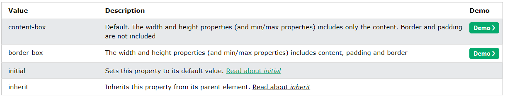
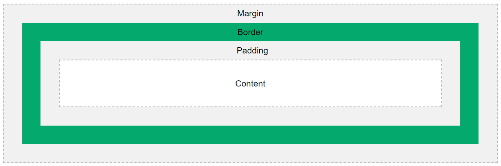

Margens e padding no CSS
A margem é o valor fora da borda do objeto, e pode ser definida por valores absolutos em pixels.
Padding é o valor dentro da borda do objeto, e pode ser definida por valores absolutos em pixels.
As margens podem ter valores negativos. O padding, não.
As propriedades de margem podem ter os seguintes valores:
auto: o navegador calcula a margemlength: define a margem em px, pt, cm, etc.%: define a margem em % da largura do elemento que a contéminherit: define que a margem deve ser herdada do elemento pai
Algumas vezes as margens superior e inferior se juntam em uma em que o valor é o maior entre as duas margens. Isso se chama "margin collapse". Veja a seção Margin collapse.
As propriedades de padding podem ter os seguintes valores:
length: define o padding em px, pt, cm, etc.%: define o padding em % da largura do elemento que o contéminherit: define que o padding deve ser herdado do elemento pai
Se o padding for definido com a propriedade width, será preciso ajustar seu comportamento com a propriedade box-sizing, já que o tamanho do elemento será a largura + o padding. Com box-sizing: border-box, a largura do elemento não muda.
Observação: as propriedades height e width não incluem padding, bordas ou margens! Elas definem a altura e a largura da área dentro do padding, borda e margem do elemento!
Use max-width/max-height ou min-width/min-height para melhorar a visualização de elementos em telas menores ou maiores, respectivamente. Quando width é maior que max-width no mesmo elemento, max-width é usada e width ignorada.

O modelo de caixa

Ao definir as propriedades de altura e largura de um elemento com CSS, esses valores mudam apenas a área de conteúdo. Para definir corretamente a altura e a largura de elementos em um site, é preciso compreender como funciona este modelo e incluir os valores de padding e bordas.
Consulte também: Outline.
Veja também: CSS (Cascading Style Sheets) e CSS Box Sizing
Margin collapse
O "margin collapse" seleciona o maior valor entre dois elementos adjacentes com margem vertical definida nos lados adjacentes (por exemplo, a margem inferior de um H1 e a margem superior de um parágrafo). É importante notar que apenas margens de bloco (verticais) têm esse comportamento, não as de linha (horizontais).
Observação: esse comportamento vem da época em que a Internet consistia principalmente de documentos. Esse ajuste das margens ajudava a garantir um espaçamento consistente entre os elementos, sem criar enormes espaços entre os elementos que tinham margens definidas.
O "margin collapse" também ajuda com elementos vazios. Se tivermos um parágrafo com margens superior e inferior de 20px, isso gera 20px de espaço, não 40px. No entanto, se qualquer coisa for adicionada dentro desse elemento, inclusive o padding, a margem não reduzirá mais e o parágrafo será tratado como qualquer caixa com conteúdo.
É possível impedir esse comportamento com as propriedades position: absolute e float. Além disso, dois elementos com margem que têm um elemento sem margem entre eles também ignoram esse comportamento, porque as margens de bloco dos elementos externos já não são mais adjacentes.
Aprendemos que contêineres flexíveis e de grade são muito similares a contêineres de bloco, mas lidam com seus elementos filhos de forma muito diferente. O margin collapse também é assim.
Em um contêiner flexível com direção de coluna, as margens se combinam.
Consulte também este artigo para saber mais sobre margens.